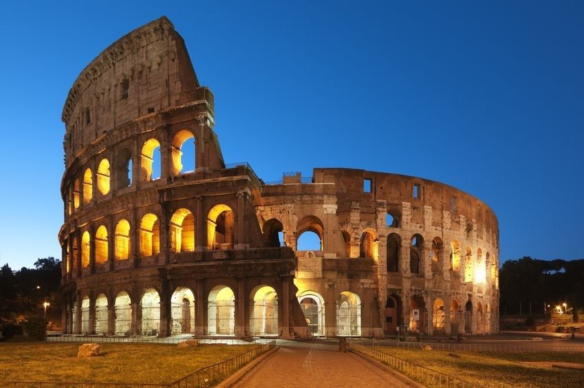

Symbol Rzymu, jeden z najbardziej rozpoznawalnych zabytków. Ten kolosalny amfiteatr był miejscem odbywania się igrzysk, które obejmowały zapasy, walki gladiatorów, walki z dzikimi zwierzętami oraz bitwy morskie, tzw. naumachie. Tradycja mówi iż w Koloseum mordowano chrześcijan, co upamiętniono krzyżem wewnątrz budowli. Teza ta jest jednak obecnie kwestionowana przez część naukowców.